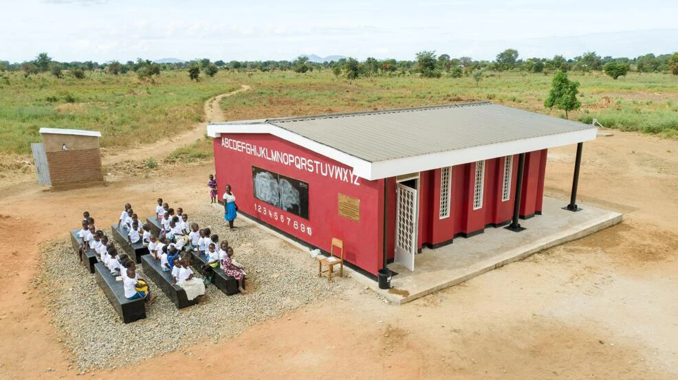
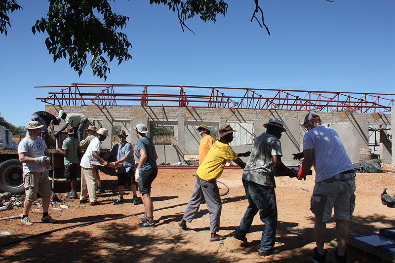

Schulen bauen
Wir schaffen Lernorte, in denen Kinder zuverlässig Unterricht erhalten und Gemeinden langfristig Perspektiven entwickeln können.
Ausführlich lesenGemeinnützig aus Bayreuth
Wir errichten Schulen, öffentliche Sanitäranlagen, Brunnen und weitere Infrastruktur in strukturschwachen Regionen Afrikas.
Africa-Aid-Bayreuth e.V. verbindet Baukompetenz, pädagogischen Blick, Logistik, Verwaltung und ehrenamtliche Unterstützung. Aus Bayreuth heraus entstehen Projekte, die Gemeinden in Afrika konkret stärken: mit Lernräumen, Wasserzugang, Hygiene und tragfähiger Infrastruktur.
Ziele des e.V.
Wir schaffen Lernorte, in denen Kinder zuverlässig Unterricht erhalten und Gemeinden langfristig Perspektiven entwickeln können.
Ausführlich lesenBrunnen und Wasserstellen verkürzen Wege, schützen Gesundheit und machen den Alltag planbarer.
Ausführlich lesenSanitäranlagen verbessern Würde, Sicherheit und Prävention an Orten, die von vielen Menschen genutzt werden.
Ausführlich lesenWir unterstützen robuste Lösungen, die vor Ort verstanden, genutzt und weitergetragen werden können.
Ausführlich lesenErreichter Erfolg
Diese Bilder zeigen ein bereits verwirklichtes Schulprojekt in Südafrika. Für Africa-Aid-Bayreuth e.V. ist dieser Erfolg ein greifbarer Beleg dafür, dass aus Planung, Spendenbereitschaft und praktischer Umsetzung ein Ort entstehen kann, an dem Kinder lernen, Gemeinschaft wachsen und Bildung verlässlicher werden kann.


Team und Verantwortung
Das lokale Einsatzteam verbindet Baudurchführung, Pädagogik und Logistik. Weitere Verantwortliche betreuen Geschäftsführung, Recht, Datenschutz, Controlling, Technik, Spenden und Steuerfragen.
Zur Personen-Seite
 Jörg Brill
Geschäftsführer
Jörg Brill
Geschäftsführer
 Thilo Romer
Rechtsabteilung und Datenschutz
Thilo Romer
Rechtsabteilung und Datenschutz
 Bernd Kripp
Ehrenvorsitzender und Hauptspender
Bernd Kripp
Ehrenvorsitzender und Hauptspender
 Janine Hoffmann
Rekrutierung
Janine Hoffmann
Rekrutierung
 Sven Schönstedt
Bauplanung und Architektur
Sven Schönstedt
Bauplanung und Architektur
Jetzt helfen
Mit Ihrer Unterstützung entstehen Schulräume, Brunnen, Sanitäranlagen und weitere Grundlagen, die Gemeinden dauerhaft stärken können.